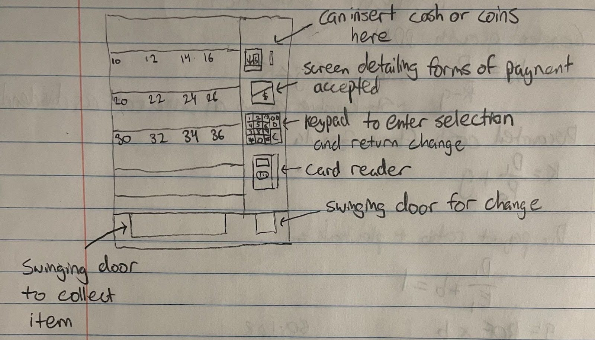
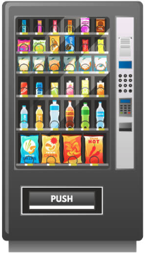
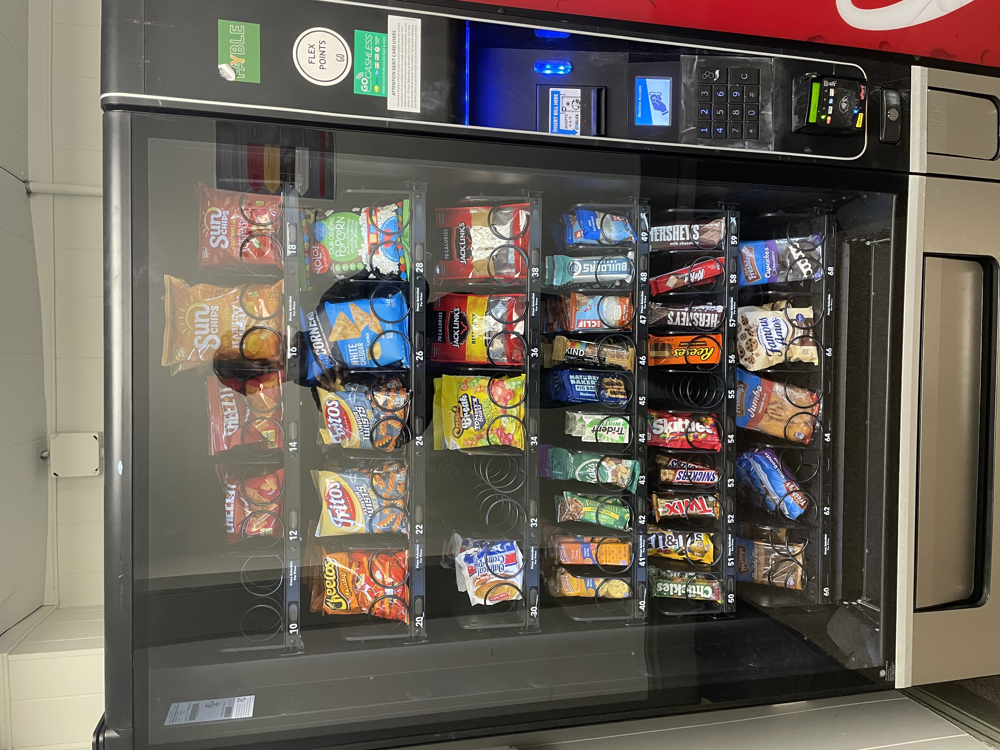
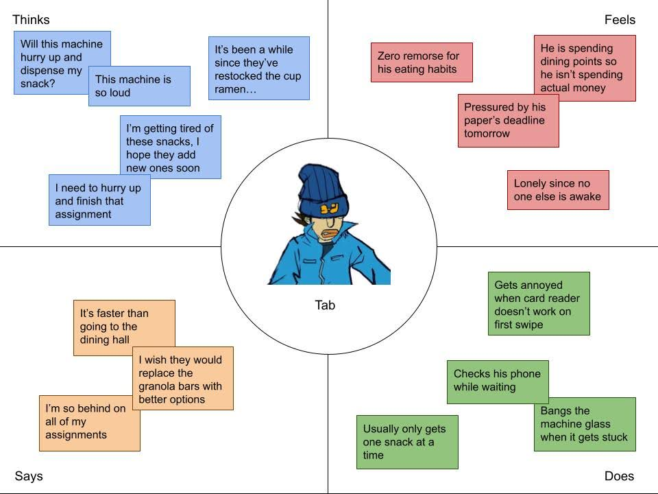
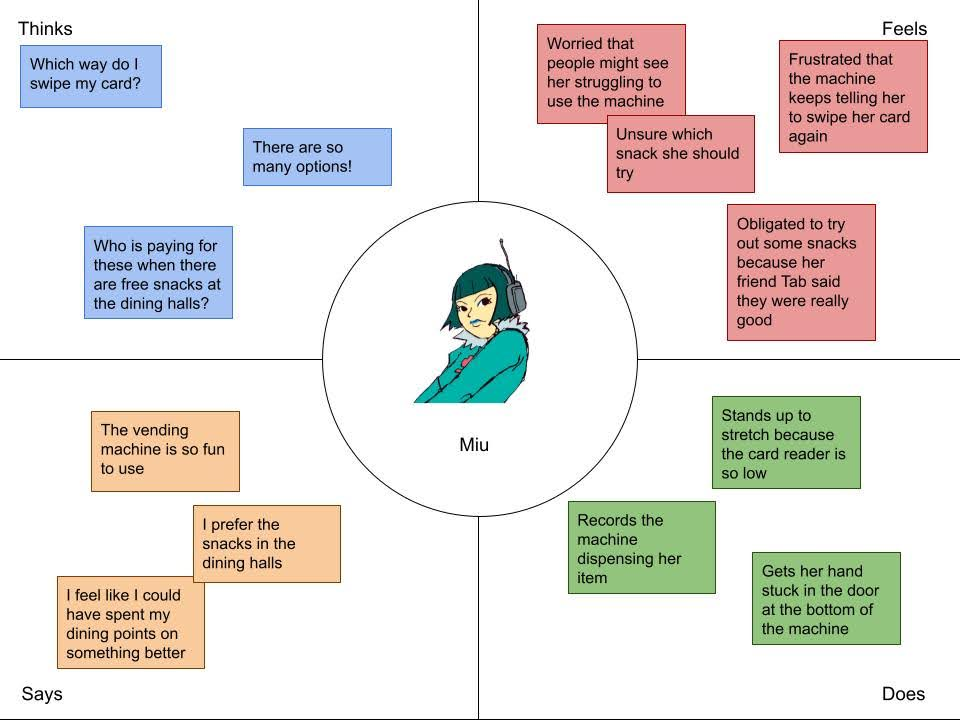
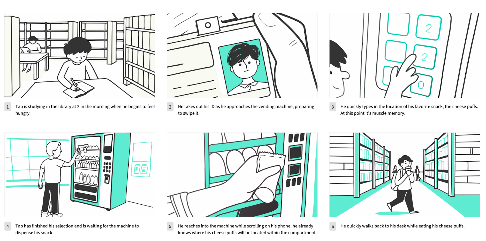

Author
Alex Huang,
Computer Science,
Brown University
Project
CSCI1300
Personas & Storyboarding
Timeline
2 weeks
Tools Used
Boords, HTML, CSS
Vending machines are the pinnacle of convenience. Their strategic locations make a large variety of snacks/drinks available to its users. The machine's interface reduces the need for a cashier, as users can shop, pay, and make change using its buttons.
The specific machine that I observed first required payment, either using the card reader or cash and coins. Then users made a selection using a keypad.

Sketch of a common vending machine interface (hover to zoom)
To gain some practical insight on the interface, I decided to observe users of vending machines at my university. Listed below are some key observations I made.

After they got their item, I asked them a few quick questions about their experience. I've summarized their responses to each question below, click on a question to see the summaries!
Those who frequently use the school vending machines say that their intuition is to pay first then make their selection, but less frequent users say that their intuition is to select first. Frequent users’ intuitions reflect the way our school vending machines operate.
Users prefer the simplicity of the drink machine format, though they also acknowledge that it limits the possible selections. They agree that fewer options aren’t always a bad thing, as long as there are options for all the common palettes.
Audio feedback only seems to be important for some, but those who don’t find it that important still say that sound is better than no sound. It is especially important for the drink machine since users can’t see inside of it, and they use the audio cues as an indicator that the machine is processing their request.
One user wishes that there was a feature to alert the owners if items were sitting in the machines for a long period of time, alerting them to swap it with something more desirable by the masses. Others wish that the card reader either displayed better instructions or could be easily swiped in both directions.
If someone wants to buy multiple items, it’s hard to tell if the machine wants you to pay again or if you can consecutively select items. Getting the speed and direction of the swipe is difficult even for familiar users.
Most users are fine with the strictly numerical locations of the items (10, 12, 14, etc). However, one user said that they prefer alphanumeric locations since it was more intuitive to them to remember rows and columns of items if they were ordering multiple.

Using the above observations, I created two personas that drew characteristics from each user type that I encountered. To display the thoughts and actions behind each persona, I made empathy maps that contain things they would think, feel, say, and do.


I also created a storyboard that depicts Tab's process when using the vending machine. It provides a visualization on the flow of events from start to finish. The events and environment leading up to interface use are important to note as well.

Images generated using AI on boords.com
I had fun talking to fellow students around campus about vending machines, I learned that everyone has similar gripes with the conventional vending machine format. Here are some takeaways I had from doing this interface research: